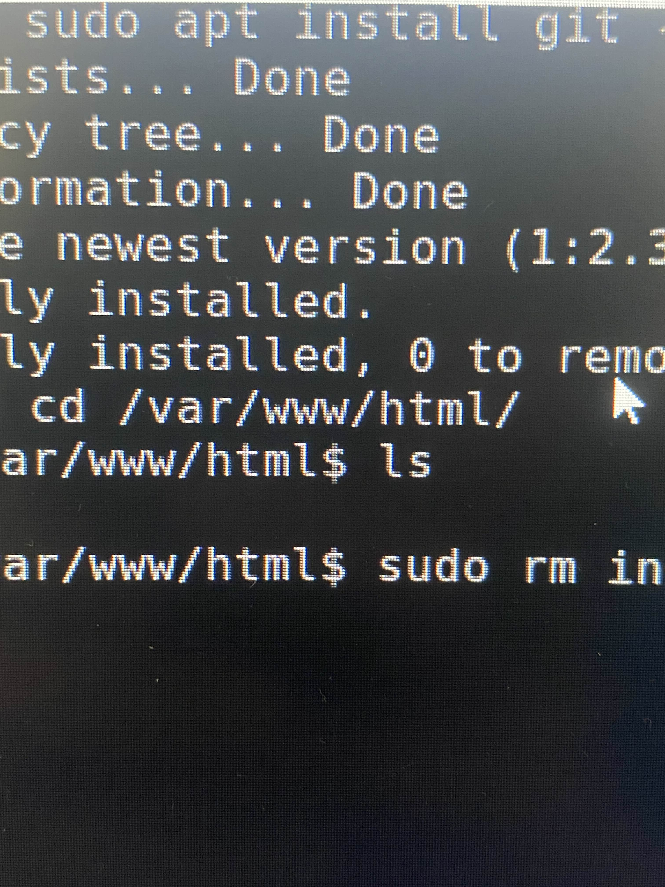

LOG (cronológico)
2025-09-13 || 9:38 AM — Problema: Inicio de la Maquina virtual
Estado: Falló
Descripción breve: Tuvimos ligeras complicaciones a la hora de crear la maquina virutal, el problema ya se soluciono, sin embargo aun así nos dio ligeros problemas y por eso nos hemos tardado en iniciarla.
Pasos realizados:
- Verificar el funcionamiento de esta.
- Probar con diferentes servidores y zonas hasta que nos resultara
- Al comprobar que todo funcionaba correctamente, iniciar la maquina virtual, con el fin de seguir con la evaluación.
Foto De funcionamiento basico

2025-09-13 || 9:45 AM — Conexión Por Bastion
Estado: Exisitoso
Descripción breve:Luego de iniciar la maquina virtual, nos conectamos atraves de Bastion.
Pasos realizados:
- Conectarnos al servicio
- Iniciamos por Bastion con el archivo local que nos genero Azure, con la contraseña "evaluacion_key.pem" para poder ingresar de manera local.
- Realizar la instalacipón de todo lo demás
2025-09-13 || 9:50 — Actualizar el sistema
Estado: Exisitoso
Descripción breve:Luego de conectarnos por Bastion, hemos realizado un "Sudo apt Update" para poder realizzar las instalaciones posteriores del sistema
Pasos realizados:
- Ejecutar el comando de actualización de Linux
- Esperar a que este termine la descarga.
- Verficar que todo se haya instalado correctamente, y que este corriendo con el comando systemctl status apache2
Foto De funcionamiento basico

2025-09-13 || 10:00 — Instalación de GIT
Estado: Exisitoso
Descripción breve:luego de la instalación de Apache, continuamos con la instalación de GIT
Pasos realizados:
- Ejecutar comando "sudo apt install git -y
- Esperar a que este termine la descarga.
- Ingesar a la ruta /var/www/html
Foto De funcionamiento basico


2025-09-13 || 10:15 — Index.HTML
Estado: Exisitoso
Descripción breve:Posterior a la instalación de GIT, hemos accedido a la ruta generada donde se encuentra el index.html de Apache
Pasos realizados:
- Dirigirnos a la ruta "/var/www/html"
- Verificar que el achivo existe utilizando el comando ls
- Crear la carpeta con el id de nuestra seccion
- Remplazar el archivo index con nuestra propia pagina web
Foto De funcionamiento basico

2025-09-13 || 10:20 -Cambios en los puertos de Apache
Estado: Exisitoso
Descripción breve:Ahora, continuamos con los puertos de Apache, los cuales los hemos cambiando de su valor predetermiando a el puerto 80
Pasos realizados:
- Ingresamos a la configuracipon de Red de Azure
- Creamos una regla de seguridad de entrada
- Cambiamos el valor de "Intervalo de puertos de destino" por 80
- El protocolo fue cambiando a TCP y le agregamos un nombre: Evalacuon"
Foto De funcionamiento basico

Reporte Final
Este es el final de nuestro Log en el que haremos un resumen de lo que hemos realizado en el proceso de esta evaluación
1) Resumen ejecutivo
Durante las pruebas realizada en la maquina virtual hemos documentado todo lo que nos ha pasado desde el inicio hasta el final, documentando los errores que tuvimos aunque hubiera sido solo uno, junto a los demás pasos solicitados por el docente
2) Arquitectura
Describe la arquitectura desplegada. Puedes pegar un diagrama o escribir el detalle.
- Proveedor: Azure — Suscripción: Azure for Students
- Recursos principales: Virtual Machine, Azure Bastion, Apache, GIT
- Especificaciones de la VM: evaluyacion, Tamaño: Predetermiando, Imagen: ubuntu 22.04 LTS, Disco: Predetermiando, Zona/Región: North central US
3) Seguridad aplicada
La Seguridad aplicada dentro de este trabajo fue la seguridad predeterminada que nos entrega Azure a la hora de crear la maquina Virtual, A lo mucho el unico cambio que hemos realizado fue cambiar el puerto atraves de la configuración de red de Azure al puerto 80 y cambiando el protocolo a TCP, con el nombre de evaluación como se especifico más arriba.
4) Resultados de pruebas y hallazgos
Resumen tabulado de pruebas realizadas (ejemplos):
| Prueba |
Fecha |
Resultado |
Comentarios |
| Inicio De Maquina Virtual |
09:38 |
Fallo -> Arreglado |
No podia iniciar inicialemnte, ahora si lo hace |
| Conexión por Bastion |
09:45 |
Funcionado |
Nos conectamos con Bastion para comenzar a descargar todo |
| Actualizar el sistema |
09:50 |
Funcionado |
Se actualizo el sistema con sudo apt |
| Instalación de GIT |
10:00 |
funcionando |
Instalamos Apache y GIT juntos y verificamos todo |
| Index HTML |
10:15 |
Funcionado |
Agregamos la carpeta ID junto con Log en la ruta del index de Apache |
5) Conclusiones
Este trabajo nos ayudo para conocer más sobre el funcionamiento basico de servidores en la nube
- Se documento todo lo que nos paso en este tiempo desde inicio hasta el final
- Utilizamos este log como forma de documentar cada proceso realizado
- Nos tomo más tiempo de lo que pensamos